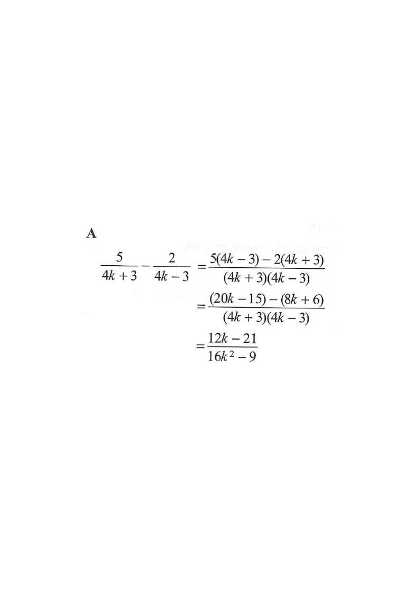

Question. Find the value of \[ \frac{5}{4k+3} - \frac{2}{4k-3}. \]

The two fractions have different denominators,
so we cannot subtract the numerators
directly.
The denominators are the two conjugate-looking linear factors
\(4k+3\) and \(4k-3\).
Hint: To subtract fractions,
first make the denominators the same.
The L.C.D. is the product of the two denominators: \[ \text{L.C.D.} = (4k+3)(4k-3). \]
Expand it using the difference of squares identity \(a^{2}-b^{2}=(a+b)(a-b)\): \[ (4k+3)(4k-3) = (4k)^{2} - 3^{2} = 16k^{2}-9. \]
Hint: $(4k+3)$ and $(4k-3)$ have no common factor,
so the L.C.D. is simply their product.
Multiply the numerator and denominator of each fraction by the missing factor:
\[ \frac{5}{4k+3} = \frac{5(4k-3)}{(4k+3)(4k-3)}, \qquad \frac{2}{4k-3} = \frac{2(4k+3)}{(4k+3)(4k-3)}. \]Hint: Top and bottom of each fraction must be multiplied by the same thing.
Now the denominators match,
so combine the numerators over the single common denominator —
remember to distribute the minus sign to both terms of $2(4k+3)$:
Hint: $-(8k+6) = -8k-6$,
not $-8k+6$. This is the most common trap.
Collect the like terms in the numerator: \[ (20k-15) - (8k+6) = 20k - 15 - 8k - 6 = 12k - 21. \]
Hint: $20k-8k = 12k$ and $-15-6 = -21$.
Put the simplified numerator over the expanded common denominator:
\[ \frac{5}{4k+3} - \frac{2}{4k-3} = \frac{12k-21}{16k^{2}-9}. \]This matches option A.
Hint: Options B and D have a wrong numerator sign;
option C comes from a wrong constant term (using $5\cdot3-2\cdot3$ incorrectly).
Question. Find the value of \(\dfrac{3}{2m+5}-\dfrac{4}{2m-5}\).